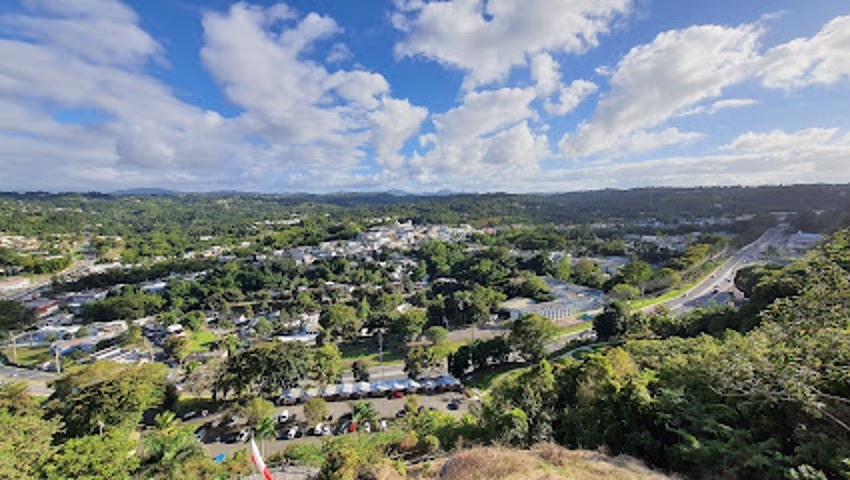
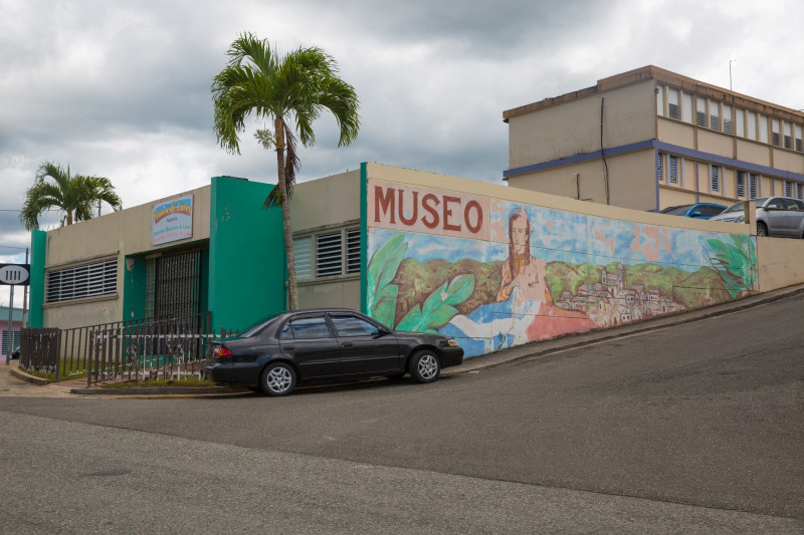
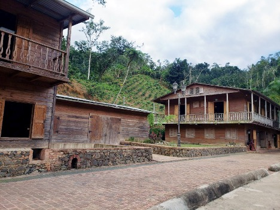

Mirador Mariana Bracetti
Para disfrutar del paisaje, dirígete al Mirador Mariana Bracetti, un espectacular mirador ubicado en el Parque El Jíbaro que ofrece vistas panorámicas tanto de la ciudad como de las montañas..
Pueden visitar el Mirador Mariana Bracetti en:
- Dirección: 74XC+X5V, Puerto Rico, Lares
Puerto Rico Interior Tours

Excursiones para la familia en donde vivirás experiencias extremas mientras visitas hermosos lugares de la fauna puertorriqueña.
Pueden visitar los Puerto Rico Interior Tours en:
- Dirección: 75V5+7QQ, Lares, 00669
Museo de Lares
Este pequeño museo está dedicado al arte y la historia, presentando artesanías locales, pinturas y fotografías históricas del pueblo de Lares.
Pueden visitar el Museo de Lares en:
- Dirección: 74WF+M6V, Calle Munoz Rivera, Lares, 00669
Hacienda Lealtad
Una visita a Hacienda Lealtad, una antigua hacienda cafetalera en Lares, lo transportará a los años 1800 cuando el café era una de las principales exportaciones de Puerto Rico.
Pueden visitar la Hacienda Lealtad en:
- Dirección: Lares, 00669